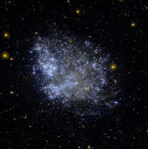

Dwarf galaxies are the most abundant type of galaxy in the universe but are difficult to detect due to their low luminosity, low mass and small size. They are most commonly found in galaxy clusters, often as companions to larger galaxies, and are classified into three main types:
- Dwarf Elliptical galaxies appear to have many of the same global properties observed in normal elliptical galaxies, just on a smaller scale. They are elliptical in shape, contain very little or no gas, and have no evidence of recent star formation. They contain 107 to 109 solar masses of material, have diameters of 1 – 10 kiloparsecs and luminosities that range from about 105 to 107 solar. However, despite appearances, they have lower metallicities and different light distributions than normal elliptical galaxies, and it is thought that Dwarf Ellipticals are actually very different entities.
- Dwarf Spheroidal galaxies exist at the faint end of the Dwarf Elliptical scale. As the name suggests, these galaxies are more spherical than elliptical and tend to be much smaller than Dwarf Ellipticals, with diameters of only 0.1 – 0.5 kiloparsecs. Given their small size and that they contain only about 107 to 108 solar masses of material, we have so far only observed this type of galaxy in the Local Group.
- Dwarf Irregular galaxies have similar properties to the larger irregular galaxies, containing substantial amounts of gas and dust and clear evidence for ongoing star formation.
An extreme type of Dwarf Irregular galaxy which features bursts of concentrated star formation are the Blue Compact Dwarfs. These galaxies contain large amounts of gas and are currently undergoing vigourous star formation resulting in their unusually blue colour. They generally have diameters less than 3 kiloparsecs and about 109 solar masses of material.